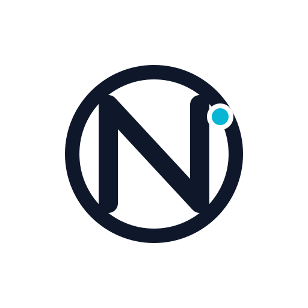

Simple Core
Clear syntax for values, functions, and control structures with minimal ceremony.

Nex is a practical, expression-oriented language with clean control flow, contracts, classes, and REPL-friendly ergonomics. It is also designed to teach good software engineering practice: problem decomposition, interface design, invariants, and testable program structure.
Clear syntax for values, functions, and control structures with minimal ceremony.
Nex emphasizes contracts, decomposition, and clear interfaces so learners build correct software habits early.
Classes and methods alongside first-class functions and composable expression forms.
-- From the Nex tutorial
function greet(name: String)
do
print("Hello, " + name)
end
greet("world")New to Nex? Start with the tutorial, then install the CLI and work through examples locally. Keep the Syntax Postcards and the complete class reference handy.
Download the bootstrap installer and run it. This installs the nex command so you can use it from anywhere.
bash <(curl -fsSL https://raw.githubusercontent.com/vijaymathew/nex/main/bootstrap-install.sh) jvm --install-depsThis is the recommended setup for full language support, including the REPL, formatting, documentation, and compilation tools.
If you prefer a user-local install, place Nex under ~/.local and add that bin directory to your shell path.
bash <(curl -fsSL https://raw.githubusercontent.com/vijaymathew/nex/main/bootstrap-install.sh) jvm --prefix "$HOME/.local" && export PATH="$HOME/.local/bin:$PATH"After installation, verify it with nex help or start the REPL with nex.
A detailed introduction to the language, best read in the browser, that walks from the fundamentals to larger programs with clear examples and steady progression.
Prefer a printable copy? Download the print-ready PDF.
A software engineering book that uses Nex to teach decomposition, interface design, invariants, and the discipline required to build systems that stay understandable as they grow.
If you want the offline edition, download the print-ready PDF.